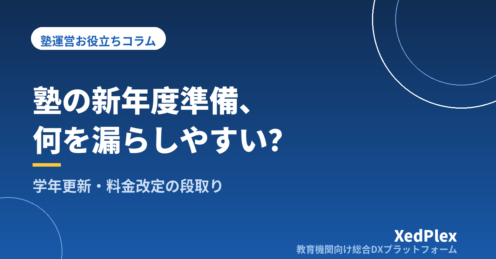

塾の新年度準備チェックリスト｜学年更新・コース変更・料金改定・名簿整理を漏れなく切り替える段取り

4月の最初の授業で、生徒に「もう中2だよ」と笑われて名簿を見ると、まだ「中1」のまま。3月で卒塾した生徒の保護者から「今月も月謝の請求が届いたのですが」と連絡が入る。コースを変えた生徒の月謝が旧料金のまま引き落とされていて、翌月に差額をお願いする──。新年度の切り替えは、個人塾の1年でもっとも事務ミスが集中する時期です。
原因は塾長の不注意ではありません。受験の追い込み、卒塾と入塾、春期講習、時間割の組み直しが同じ数週間に重なり、「切り替え作業」を落ち着いてやる時間が物理的に取れないからです。この記事では、新年度の切り替えで起きやすいミスを整理したうえで、1月から4月までの時期別スケジュール、名簿・料金・時間割・保護者案内の4分野のチェックリスト、そして来年の切り替えをラクにする仕組みを、ひとり塾長の実務目線でまとめます。
新年度の切り替えで起きやすい4つのミス
個人塾でよく聞く切り替えミスは、次の4つに集約されます。
| ミス | 起きていること | 背景 |
|---|---|---|
| 学年の更新漏れ | 名簿・報告書・テスト範囲が旧学年のまま。中3向けの案内が新中3（旧中2）に届かない | 学年を1人ずつ手で書き換えていて、途中で止まった |
| 卒塾・退塾生への請求 | 3月で辞めた生徒に4月分の請求書や引き落としが発生する | 名簿と請求データが別々に管理されていて、片方だけ更新した |
| 料金の反映漏れ | コース変更・学年進級・料金改定が月謝に反映されず、旧料金で請求 | 「誰がいくらになるか」の確定が4月にずれ込んだ |
| 案内の遅れ | 新時間割・年間予定・持ち物の案内が初回授業の直前になり、問い合わせが殺到 | 時間割確定→講師調整→保護者案内の順番が後ろ倒しになった |
共通しているのは、「名簿」「お金」「時間割」が別々に管理されていて、ひとつを直しても他が連動しないことです。この構造を理解しておくと、チェックリストの「どこを二重に確認すべきか」が分かります。
いつから何をする？ 1月〜4月の時期別スケジュール
新年度準備は「3月に入ってから」では間に合いません。受験シーズンと重なる3月は、事務作業に使える時間がもっとも少ない月だからです。目安として、次のように前倒しで配分します。
| 時期 | やること | ここで決めておくこと |
|---|---|---|
| 1月 | 料金表・コース設計の見直し、新年度の年間予定（講習・面談・休講日）の骨子作成 | 料金改定の有無と金額、新コースの追加・廃止 |
| 2月上旬〜中旬 | 在塾生への継続・コース変更の意向確認、新年度案内の配布、料金改定があれば告知 | 継続・変更の回答期限（2月末が目安） |
| 2月下旬〜3月上旬 | 回答の集計、退塾・休塾の受付、新時間割の素案、講師の来年度シフト確認 | 時間割の確定日、新規入塾の受付枠 |
| 3月中旬〜下旬 | 名簿の学年更新と卒塾・退塾処理、4月分の請求内容確定、新時間割と年間予定の案内 | 4月請求の最終確認日（請求書発行や引き落としデータ作成の締切から逆算） |
| 4月第1週 | 初回授業での最終確認（名簿・座席・持ち物）、講師への引き継ぎ、抜け漏れの拾い上げ | 切り替えの振り返りメモ（来年の改善点） |
ポイントは、2月末までに「誰が・どのコースで・いくらで」継続するかの回答を締め切ることです。ここが3月にずれ込むと、名簿・請求・時間割のすべてが後ろ倒しになります。継続確認の期限は、春期講習の申込締切と同じ用紙にまとめると、保護者の負担も減ります（季節講習の申込管理を混乱させないコツ）。
チェックリスト①：名簿と学年更新
名簿は、請求・連絡・報告書のすべての土台です。ここを最初に、かつ一度で正しく更新します。
- 卒塾・退塾生の処理：3月末で終了する生徒を名簿上「退塾済み」にし、請求・配信の対象から外す。データを削除するのではなく、終了日を記録して残す（後日の問い合わせや紹介の際に必要になる）。
- 学年の一括繰り上げ：在塾生全員の学年を4月1日付で1つ上げる。小6→中1、中3→高1など、校種が変わる生徒はコース・料金・教材も同時に見直す。
- 学校情報の更新：進学する生徒の新しい学校名を確認する（テスト日程や休校日が変わるため）。
- 連絡先の再確認：保護者の電話番号・メールアドレス・LINEの登録状況を年に一度は確認する。継続確認の用紙に「変更がある場合はご記入ください」の欄を設けると、別途集める手間がない。
- 兄弟姉妹の情報：兄弟割引や請求先のまとめ方に関わるため、兄が卒塾して弟だけになる、といった変化を反映する。
生徒ごとに「中2」と文字で書いている名簿は、毎年全員分を手で書き換えることになります。「生年月日」や「入塾時の学年と年度」から学年を自動で判定する形にしておくと、更新作業そのものがなくなります。エクセルでも数式で対応できますが、名簿と請求が別ファイルのままだと結局二重更新は残ります（生徒管理エクセルの限界サイン）。
チェックリスト②：コース変更と料金改定
お金まわりのミスは、保護者の信頼に直結します。名簿の更新が終わってから、次の順で確認します。
- 新年度の料金表を確定する：学年別・コース別の月謝、教材費、諸費用を一枚にまとめる。料金改定を行う場合は、告知の段取りと文例を「塾の月謝値上げ、保護者にどう伝える？」で確認しておく。
- 生徒ごとの「4月からの月謝」を一覧にする：継続確認の回答をもとに、全員分の新コース・新月謝を表にする。進級に伴う自動的な変更（中3料金への移行など）も、この表に含める。
- 請求データに反映し、名簿と突き合わせる：「名簿にいるのに請求がない生徒」「請求があるのに名簿にいない生徒」がゼロであることを確認する。この突き合わせを4月請求の締切日より前に必ず行う。
- 口座振替の変更を締切前に済ませる：金額変更のデータ提出には締切があるため、3月中旬までに新金額を確定させておく。締切を過ぎると、4月は旧金額で引き落とされ、差額調整が必要になる。
- 年度末の精算を分けて処理する：3月分の教材費や講習費の精算と、4月からの新月謝を混ぜない。退塾生への最終請求や返金がある場合も、4月請求の作業とは切り離して個別に処理する。
請求の作業そのものを毎月ラクにする考え方は、「塾の請求書発行を効率化・自動化する手順」にまとめています。新年度の切り替えは、請求の仕組みを見直すのにも良いタイミングです。
チェックリスト③：時間割・講師・保護者への案内
名簿とお金が固まったら、最後に「いつ・誰が・どこで」を確定し、保護者と講師に届けます。
時間割と座席
- 新年度のコマ表を、学年更新後の名簿で組み直す（学校の部活動や通学時間の変化で、通塾可能な曜日が変わる生徒が多い）。
- 個別指導では、講師の来年度の在籍状況（卒業・就職・シフト希望）を先に確認してからコマを割り当てる（座席・コマ管理の考え方／講師のシフト管理）。
講師への引き継ぎ
- 担当が変わる生徒について、前担当の指導記録（つまずき・家庭の状況・保護者の要望）を新担当に渡す。口頭ではなく記録として残っていることが望ましい（指導報告書の書き方）。
- 新年度のルール変更（欠席連絡の方法、宿題の運用など）を講師全員に共有する。
保護者への案内
- 3月中に「新年度のご案内」として、新時間割・月謝・年間予定（講習期間・面談時期・休講日）・持ち物をまとめて配布する。個別に届く内容（その生徒の曜日と金額）と、全員共通の内容を分けて用意する。
- 案内は紙だけでなく、LINEやメールでも同じ内容を届け、読まれていない場合に備える（保護者連絡の手段と機能）。
- 新入塾生の保護者には、初回授業前に連絡手段の登録と欠席連絡の方法を案内する。ここが初回に済んでいると、その後の連絡が楽になる。
来年の切り替えをラクにする3つの仕組み
チェックリストを毎年ゼロから思い出すのは大変です。今年の切り替えが終わったら、次の3つを整えておくと、来年は作業の半分が消えます。
- 名簿とお金をひとつにつなぐ：生徒の情報を更新すれば請求にも反映される形にしておく。名簿・請求・連絡先が別々のファイルにある限り、「片方だけ更新した」ミスはなくなりません。
- 「年度依存の項目」を洗い出しておく：学年、コース、月謝、担当講師、通塾曜日、学校名。この6つは毎年変わりうる項目です。どこに記録されていて、誰がいつ更新するかを一覧にしておけば、来年のチェックリストはそのまま使えます。
- 切り替えの振り返りを4月中に書く：「継続確認の締切が遅かった」「口座振替の締切を忘れかけた」など、今年つまずいた点を数行のメモにして、来年1月に読み返せる場所に置いておく。1年経つと、驚くほど忘れています。
年間の事務作業を見直す考え方は、「個人塾の塾長が今日からできる業務効率化」でも触れています。新年度の切り替えは、その中でもっとも作業が集中する山場です。山場を前倒しで平らにすることが、3月に受験生へ集中するための最良の準備になります。
まとめ：新年度準備は「3月」ではなく「1月」から始める
塾の新年度切り替えで起きるミスは、学年の更新漏れ・卒塾生への請求・料金の反映漏れ・案内の遅れの4つに集約され、その原因は名簿・お金・時間割が別々に管理されていることにあります。対策は、1月から前倒しで進めること、2月末までに継続・変更の回答を締め切ること、名簿を先に確定してから請求と時間割を突き合わせることの3点です。
まずは、今年の切り替えでつまずいた点を数行書き出し、来年1月のカレンダーに「新年度準備スタート」と入れるところから始めてみてください。そして名簿と請求が別ファイルのままなら、それをひとつにする検討を、切り替えの山場が来る前に済ませておきましょう。
この記事を書いた運営より
私たちは、個人経営・小規模の学習塾向けに、生徒管理・QRコードでの入退室記録・月次請求・保護者へのLINE/メール通知・AIによる学習支援までをひとつにまとめた教育機関向け総合DXプラットフォーム「XedPlex（ゼドプレックス）」を開発・提供しています。初期費用は0円、料金は生徒1名あたり月額300円（税込）から。生徒50名の塾なら月15,000円（税込）です。全国8つの教室で導入されており、導入塾には紹介ホームページの無料作成も行っています。機能の詳細説明はこちら。
XedPlexの詳細を見る